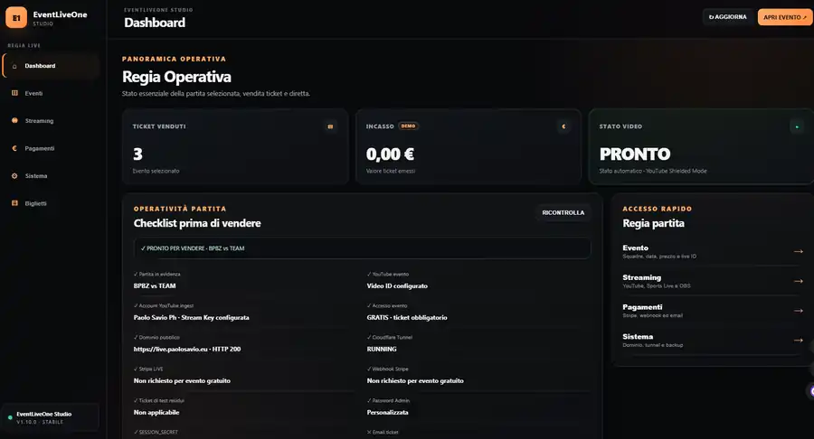
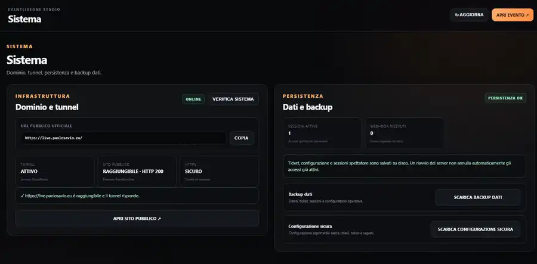

Eventi
Calendario, stato, pagina pubblica e configurazione vengono gestiti per singolo evento.
Case study · EventLiveOne Studio
EventLiveOne Studio trasforma una diretta video in un flusso operativo controllato: configurazione evento, accesso tramite ticket, streaming, controlli preflight, infrastruttura e persistenza dello stato nello stesso ambiente.
UI attuale
V1.10.0
Stato
Stable
Categoria
Live Video Platform
Baseline repo
V1.9.5
Real product screens
Schermate reali di EventLiveOne Studio: dashboard operativa, gestione eventi, controllo streaming e infrastruttura di sistema. La schermata ticket non viene pubblicata perché contiene dati di accesso reali.

01 · Dashboard
Ticket emessi, stato video, controlli essenziali e checklist prima di aprire l'evento o andare in onda sono raccolti nella stessa vista.

02 · Eventi
Ogni evento mantiene pagina, stato, accessi e configurazione separati; il pannello guida il flusso dai dati evento al canale video e al Live ID.

03 · Streaming
Stato YouTube, Sports Live, player protetto e session gate vengono verificati nello stesso pannello prima della messa in onda.

04 · Sistema
Controlli di raggiungibilità, HTTPS, persistenza dello stato e backup operativo rendono l'app gestibile anche oltre il singolo evento.
01 · Il problema
Quando una diretta richiede accesso controllato, servono gestione dell'evento, ticket, stato streaming, protezione del player, verifiche tecniche e persistenza operativa.
Il progetto è stato quindi trattato come un prodotto software completo, non come una semplice pagina con un video incorporato.
02 · Product map
Le aree principali del sistema sono supportate dalle schermate reali mostrate sopra.
Calendario, stato, pagina pubblica e configurazione vengono gestiti per singolo evento.
La regia controlla account, destinazione, player e readiness della diretta.
Ticket e session gate separano la fruizione pubblica dall'accesso autorizzato.
Dominio, tunnel, HTTPS, persistenza e backup sono verificabili dalla regia.
03 · Engineering hygiene
Escluso
Environment secrets
File .env, chiavi, token e password non vengono conservati nella baseline condivisa.
Escluso
Runtime configuration
La configurazione runtime reale viene tenuta fuori dal repository.
Escluso
Sessions
I dati di sessione reali non fanno parte della copia sorgente condivisa.
Escluso
Runtime store
Anche lo store operativo viene separato dalla baseline del prodotto.
04 · Release strategy
La baseline operativa documentata nel repository è la V1.9.5. Le schermate reali mostrate in questa pagina appartengono alla successiva V1.10.0 STABILE.
Lo sviluppo resta separato dalla versione verificata, così le modifiche possono essere testate prima della promozione alla linea stabile.
Risultato
EventLiveOne Studio dimostra progettazione di workflow reali, controllo operativo, accesso protetto, gestione streaming e infrastruttura in un unico prodotto verticale.